뉴욕의 관광명소 TOP4
관광지 소개
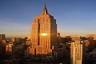
Empire State Building
엠파이어 스테이트 빌딩
세계에서 가장 유명한 마천루이자
뉴욕의 대표 랜드마크 입니다.
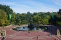
Central Park
센트럴 파크
맨해튼 중앙에 네모낳게 자리 잡은
341만 제곱미터의
거대 공원 입니다.
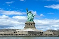
Statue of Liberty
자유의 여신상
미국 독립 100주년을 기념해 프랑스가
미국에 선물한
미국의 아메리칸 드림
상징물 입니다.
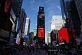
Time Squre
타임 스퀘어
42번가~ 49번가까지 차지하는
뉴욕의 대표적인 교차로입니다.
뉴욕 맛집 TOP2
맛집 소개
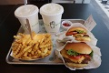
Shake Shack Burger
쉑쉑 버거
서부는 인앤아웃, 동부는 쉑쉑버거 라고 불릴만큼
뉴욕의 대표적인 햄버거 브랜드 입니다.
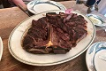
Wolfgangs Steak House
울프강 스테이크 하우스
뉴욕의 3대 스테이크 라고 불리며
현지인들도 많이 찾는 유명 레스토랑 입니다.
뉴욕 축제 TOP4
축제 소개
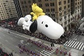
Thanks giving Day
땡스기빙데이
미국의 1년중 최대의 명절 입니다.
바로 다음날에는 대규모 할인행사
블랙 프라이데이가 열립니다.
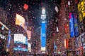
Ball Drop
볼 드롭
타임 스퀘어에서 열리는 1월 1일
카운트 다운 행사 입니다.
Halloween
할로윈
미국 전역에서 매년 10월 31일에
유령이나 괴물 분장을 하고
즐기는 축제 입니다.
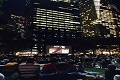
Bryant Park Moive Night
브라이언트 파크 무비 나이트
42번가에 위치하며
6~8월의 월요일
밤마다 무료 영화를 상영 합니다.
뉴욕 기념품 TOP2
맛집 소개
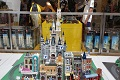
Lego Store
레고 스토어
타임 스퀘어 기념품샵에 위치하며, 국내보다 저렴한 구매가 가능 합니다.
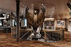
Harry Potter Store
해리포터 스토어
타임 스퀘어 기념품샵에
위치하며, 다양한 해리포터 상품을 구매할 수 있습니다.